ON SOURCE: BURLINGTON CONTEMPORARY
Emotional labour of social practice artists: moving towards sustainable collective care
by Rebecca Gordon and Naomi White • November 2025 • Journal article
Abstract
Abstract
This article explores the emotional labour of social practice artists. It does so in order to consider creative approaches to care and well-being that will enable artists to practise more safely and sustainably. It reflects on various forms of labour involved in artmaking – from craft and artisanal labour to intellectual, immaterial, affective and relational labour – before reporting on the perspectives of social practice artists concerning the emotional labour involved in their work. Their views were collected first using a questionnaire and then a online forum. This work was carried out during an exploratory interdisciplinary project in 2022, conducted by an art historian and clinical research psychologist, funded by University College London, and in partnership with the Social Art Network (SAN). The reporting of this project and critical reflections on labour is timely given the ongoing governmental and council cuts to funding for primary care services in the United Kingdom, which will increase the need and workload of artists through such initiatives as social prescribing. Concurrently, arts and culture funding is being slashed. This article lays the groundwork for exploring emotional labour to inform future developments of infrastructures of collective care for social practice artists and, indeed, communities at large.
Introduction
Social practice artists, distinct from studio artists, workshop facilitators or art educators, ‘make social relationships and structures the primary medium of their work, instead of, or in addition to the use of material and digital media’, as defined by Amanda Ravetz and Lucy Wright.1 François Matarasso describes social practice art – or ‘participatory art’ as he calls it – as ‘a specific and historically-recent practice that connects professional and non-professional artists in an act of co-creation’ FIG. 1.2 Such close collaboration with participants and communities generates an expectation for artists to regulate their emotions during these interactions in order to foster an environment conducive to open and creative engagement. This process, known as ‘emotional labour’,3 can, without adequate support, increase the risk of burnout, defined as ‘a prolonged response to chronic emotional and interpersonal stressors on the job’.4
The arts are often cited as being beneficial in alleviating burnout more widely, with pilot projects such as Overcoming Burnout through Arts – part of the European Commission’s Creative Europe Art & Well-being programme FIG. 2 FIG. 3 – implemented in Romania in 2020 following the COVID-19 pandemic, and the development of social prescribing infrastructure across the United Kingdom to support public health and well-being.5 However, very little has been written about burnout for artists tasked with deliveringsuch activities.
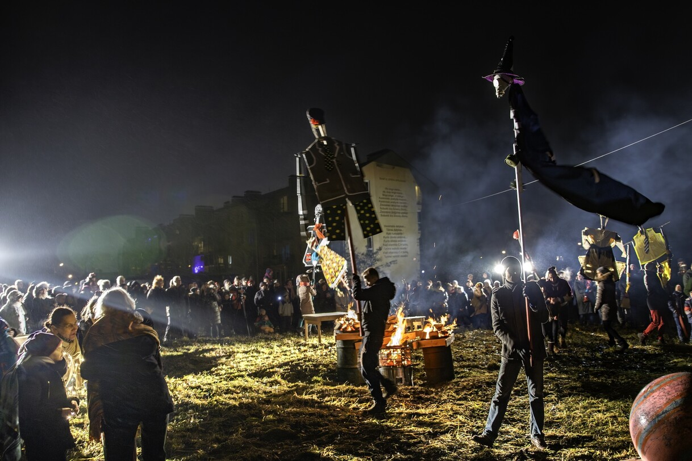
FIG. 1 Cabbage Field, by Vita Gelūnienė and Ed Carroll. Community opera performed at the Balsamic Christmas Poplar Festival at Cabbage Field, Šančiai, Kaunas, 29th December 2018. (Courtesy the artists; photograph D. Petrulis).
This article begins by reflecting on various forms of labour involved in artmaking – from craft and artisanal labour to intellectual, immaterial, affective and relational labour – before outlining the main findings of the exploratory project ‘Emotional labour of social practice artists’, conducted in 2022 by an art historian and clinical research psychologist, funded by University College London, in partnership with the Social Art Network (SAN), a mutual aid network for social practice artists in the United Kingdom. The project sought to identify the perceived emotional labour expended by social practice artists in their work. The main body of the article expands on the central themes drawn from the sample of artists’ responses to the online questionnaire circulated by SAN. It concludes by discussing what measures could be implemented to help manage this emotional labour. Building sustainable infrastructures of collective care is proposed as one way to support these artists in their work.
1. Forms of labour in artmaking
Firstly, it is worth providing some context on various forms of labour in artmaking to situate the emergence and nuance of emotional labour in contemporary artistic practice.
1.1 Intellectual labour
The sentiment of Matarasso’s assertion – that social art practice is a process of co-creation between professional and non-professional artists – seems to fly in the face of traditional notions of artistic labour that are tied to perceived innate genius.6 Artists have always pushed the boundaries of what has come before. With the onset of industrial production came the possibility of separating the design of the art object from its making. Artists no longer necessarily felt obliged to make the physical object themselves, instead commissioning skilled technicians to execute their designs and ideas. This distributed labour was nothing new in the history of art. For centuries, it had been part of the creative economy for workshop apprentices to paint large areas of a mapped composition before the master completed the details of faces and hands.
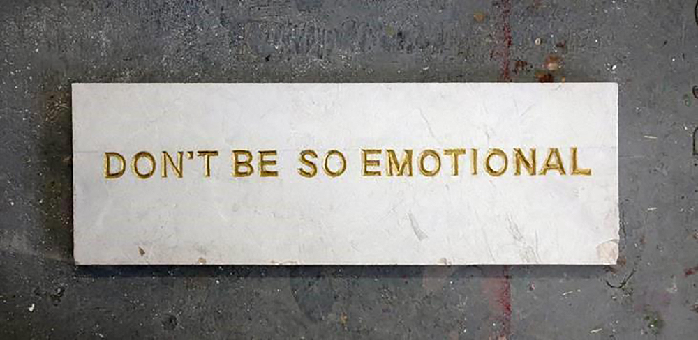
FIG. 2 Don’t be so emotional, by Nika Rukavina. Performed at Bozar, Brussels, 2021. (Courtesy the artist and Art and Well-being).
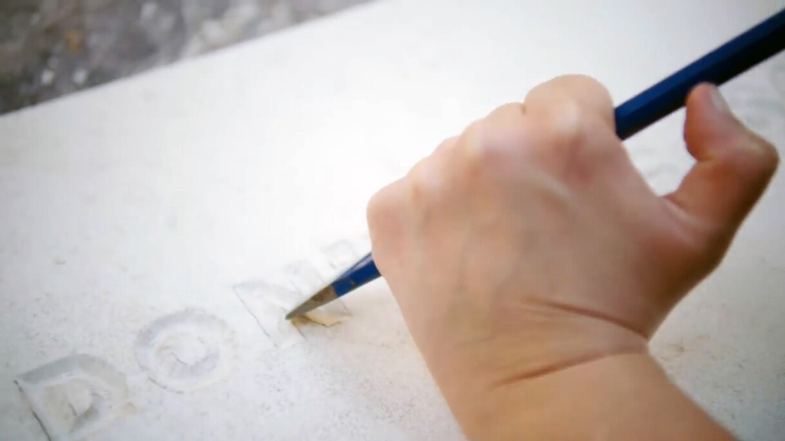
FIG. 3 Don’t be so emotional, by Nika Rukavina. Performed at Bozar, Brussels, 2021. (Courtesy the artist and Art and Well-being).
What was pushed to its limit with the dematerialised art of the mid-twentieth century, however, was the apparent severing of authorial ties to material and their realignment with conceptual expression. Attention shifted from constituent matter and artisanal craft to overarching concept – from productive labour, in the capitalist sense, to intellectual labour. The readymade, for example, Marcel Duchamp’s infamous Fountain (1917), is widely cited as the epitome, and arguably instigator, of this process. It directly challenged what constitutes artistic labour while bringing into view the labour of others. As Martha Buskirk has noted, ‘thus the old apprenticeship in skill and technique turns into a new apprenticeship in ideas’.7 Of course, this was neither a linear nor strictly chronological development. Yet by the 1960s artisanal labour was divorced from artistic labour, and the latter became entwined with intellectual labour.8
1.2 Immaterial and affective labour
The emphasis on intellectual labour in artmaking meant that the resulting material product was no longer guaranteed or necessary. In their neo-Marxist analysis of advanced capitalism, Michael Hardt and Antonio Negri described a shift from the manufacture of durable goods to the immaterial labour of ‘information, communication, knowledge, affects, and relationships’.9 Johanna Oksala, in her feminist rereading, noted that ‘the labor involved in all immaterial productions remains material in the sense that it involves bodies and brain. Its products are immaterial, however’.10 She clarified that, although according to Hardt and Negri, immaterial labour constitutes only a minority of global production and is largely confined to dominant regions of the world, it nonetheless has become ‘the paradigmatic form of labor today – not quantitatively the most common but a hegemonic model toward which all forms of work are tending’.11 This description of broader economic labour trends closely parallels that of artistic labour. From the 1950s onwards, avant-garde art increasingly orientated itself towards forms of production grounded in communication, affect and relationships.
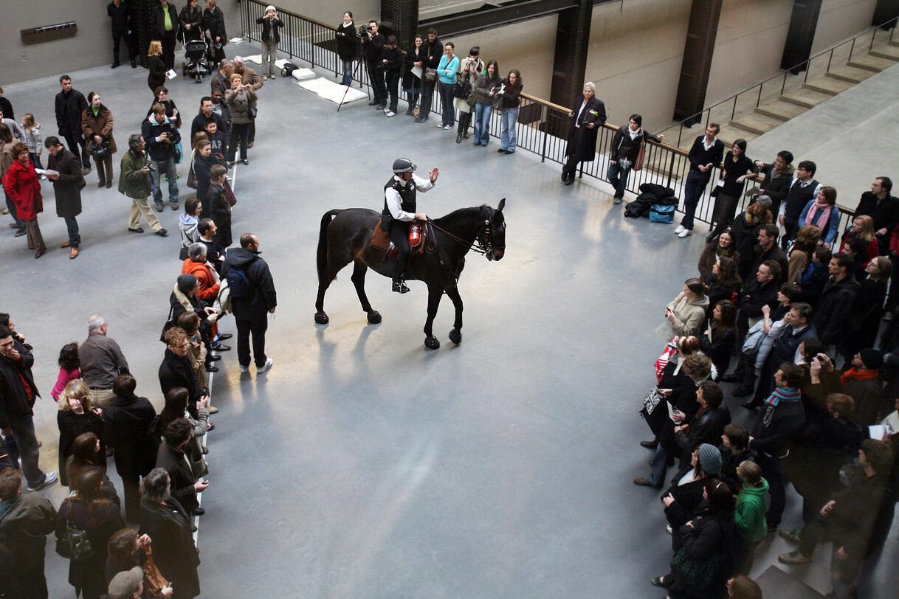
FIG. 4 Tatlin’s Whisper #5, by Tania Bruguera. Performed at Tate Modern, London, 2008. (© Tania Bruguera; © Shelia Burnett; Tate Images).
‘Affective labour’ is understood as a subcategory of immaterial labour. As Oksala outlined, it is the work ‘of human contact and interaction, which involves the production and manipulation of affects. Its “products” are relationships and emotional responses’.12 This description is not dissimilar to Ravetz and Wright’s definition of social practice art as ‘social relationships and structures’. Although there tend to be material aspects produced in the process, such as a community mural or social media presence, the critical core of the practice and ethos is the immaterial labour of building relationships, gaining knowledge, communicating unheard voices and affecting change. Unlike activist or protest art, such as the work of Tania Bruguera (b.1968) FIG. 4 or the collective Women On Waves, which necessitate a public arena FIG. 5, social practice art is co-created through an artist’s understanding of the complexities and dynamics of a specific community in the hyper-local. Generative relationships require the slow building of trust and cannot be rushed or falsified. Meaningful collaboration can only bear fruit by nourishing such relationships. Therefore, as Oksala explained, ‘workers are expected to mobilize emotional and social skills for professional goals, resulting in the blending of the private and the public, the informal and the formal, skills and resources’.13 Artistic labour in this context has expanded beyond the purely artisanal or intellectual (although these are also necessary). Labour in social practice art, specifically, demands relationality.
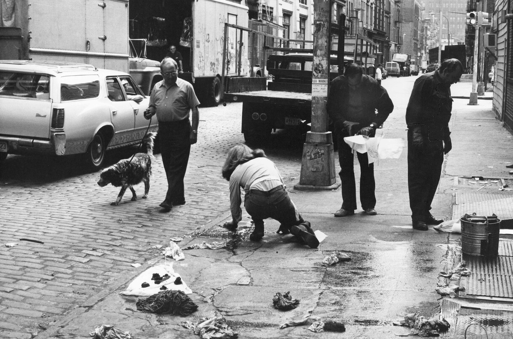
FIG. 5 Detail of Washing, by Mierle Laderman Ukeles. Performed in front of the A.I.R gallery on Wooster Street Soho, 1974. Black-and-white photographs with 2 text pages. (© Mierle Laderman Ukeles).
1.3 Relational work and relational labour
The role and negotiation of relationships in creative practice has been discussed most notably in relation to musicians and music industry workers. The economic sociologist Viviana Zelizer’s theory of ‘relational work’is often cited as a starting point for such research. She has defined it broadly as ‘the creative effort people make establishing, maintaining, negotiating, transforming, and terminating interpersonal relations’.14 Zelizer clarifies that relational work is not confined to the realm of economic transactions, but rather constitutes a continuous process across multiple domains of life, from the political and civic to the religious and social. She rejects the notion of the social and economic as ‘hostile worlds’, arguing instead that people strive to create ‘good matches’ between social ties and meaningful economic transactions.15 This involves establishing boundaries, clear expectations and appropriate transactions and practices.16
Nancy Baym’s concept of ‘relational labour’ differs from relational work in that its goal of fostering ongoing connections is explicitly economic.17 The connections Baym described are those cultivated between musicians and their fans through communication on social media. On several levels, this form of relationality jars with that of social practice art – not least because it depends on a musician–fan dynamic rather than one of co-creation, and operates within a ‘digitally-mediated, one-to-many environment’.18 Lee Hair identified this form of interaction as ‘parasocial’:
(1) an imagined relationship, (2) purposefully cultivated by a media (3) to strengthen their connection with a mass of unknown fans, (4) with economic benefit (typically loyalty) as the end goal.19
In contrast to the ‘parasocial’, George Musgrave has examined what he calls ‘the most proximate relationships’ in the lives of musicians to ascertain how ‘maintaining, understanding and negotiating’ those relationships affects their mental health.20 Musgrave asserts that this form of relational work – centred on those most intimate relationships, whether informal or professional – depends upon complex emotional dynamics, particularly when managing potential mismatches in expectations and investment. In this article, however, ‘emotional labour’ relates not to the dynamics of emotions and the impact on relationships, but to the relational work of holding and managing emotions in social practice art.
1.4 Emotional labour
Arlie Hochschild established her theory of ‘emotional labour’ in a study of flight attendants and bill collectors.21 She argued that such workers are expected to display socially desirable emotions during service interactions. The demeanour of flight attendants, for example, can function as a barometer of concern for nervous fliers. While their role is first and foremost to ensure the safety of passengers, they are also expected to provide ‘service with a smile’. Hochschild defined the emotional labour involved in these roles as ‘the management of feeling to create a publicly observable facial and bodily display’.22 She also recognised that the continual regulation of emotions during such interactions can exact a psychological toll. Emotional labour is generally characterised by two regulation strategies: ‘surface acting’ and ‘deep acting’. The former involves simulating the required emotions, without genuinely feeling them – a process that can be likened to wearing a mask that separates outward appearance from the realities beneath. The energy required to hold that mask in place can become exhausting over time. The latter requires putting effort into truly feeling and expressing the required emotions and attempting to modify feelings to match expectations. For example, an astute counsellor might try to understand the emotions of the client in order to respond empathetically. Similarly, one expects nurses to feel compassion and funeral directors to be sombre and respectful.23
The present project sought to explore emotional labour within social practice art and its impact as described by the artists themselves. This builds on previous work characterising the emotional toll on social practice artists and the support they need. In her article ‘Who cares? At what price?’ Eleonora Belfiore highlighted the hidden personal and psychological costs shouldered by creative practitioners in their work with ‘disadvantaged populations’.24 The practitioners that she interviewed were artists working on project-based, publicly funded participatory arts projects. The unacknowledged costs involved in social practice art are identified by Belfiore as financial, emotional and psychological, and raise ethical dilemmas for artists, particularly around their duty of care post-project. These costs are unequally distributed between the project funders and deliverers, with artists bearing the majority of the load.25
Belfiore used Joan Tronto’s four-part taxonomy of care as an interpretative framework to understand artists’ motivations to engage in care work.26 She identified ‘attentiveness’ to the needs of participants and their wider communities (‘caring about’, in Tronto’s terms), along with a willingness to absorb the ‘responsibility’ of their care, often due to underlying moral pressure (‘caring for’), as reasons why artists may take on personal financial and emotional costs in order to deliver the ‘care giving’ phase.27 ‘Responsiveness’ (‘care receiving’), Tronto’s final criterion, involves the reflection of the care provider on the effectiveness of the care given.28 This final phase tends to be prioritised by funders as feedback and analysis can be measured, essentially evidencing effectiveness of the project and therefore justifying the investment made. This article acknowledges those drivers and draws instead on Tronto’s later proposition of ‘caring-with’ to offer further insights into the emotional labour of social practice artists and a call for collective sustainability through care.29
2. Project methods and analysis
Given the scope of this small-scale, exploratory project, a broad range of social practice artists were invited to participate. Using an online questionnaire that could be distributed widely with minimal burden on respondents, in-depth responses to open-ended questions were gathered. This qualitative methodology allowed the present authors to gather rich insights into the lived experiences of social practice artists.30 The questionnaire (Appendix) was designed by the authors in consultation with the social practice artist Sally Labern FIG. 6 and distributed by SAN. It invited artists to share their perspectives on emotional labour, its impact and what they find helpful to manage it in relation to their practice. Participation was voluntary and no incentives were provided.
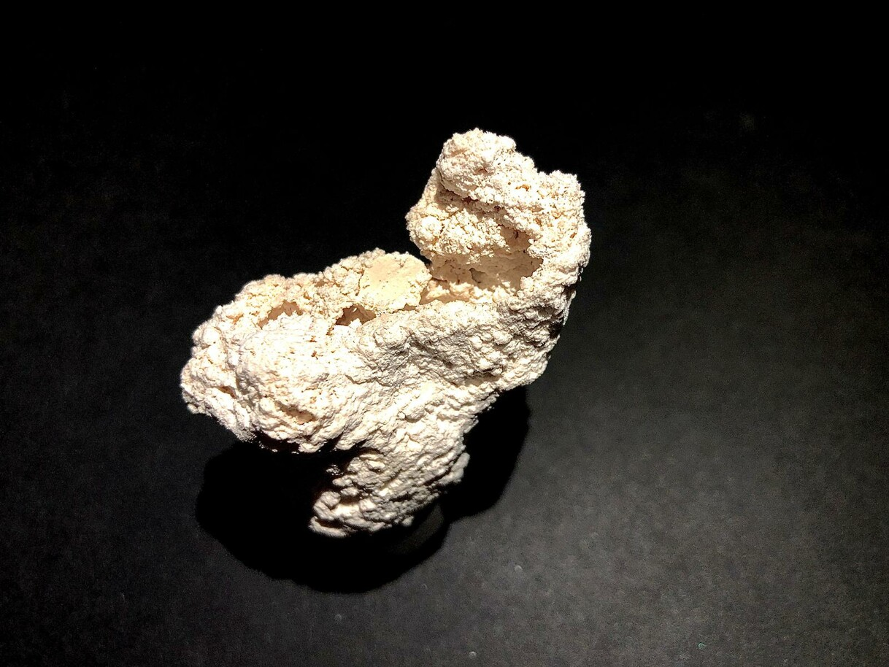
FIG. 6 Spt’t;t ‘…spitball’ Made with and for my mother, by Sally Labern. 2025. Plaster of paris. (Part of a multidisciplinary social practice collaboration led by Sally Labern and the composer Marianne Rizkallah Johnson; courtesy Sally Labern).
The final convenience sample comprised twenty-three respondents (n=23), who identified their creative practice as being ‘based on social relationships and participatory engagements’ and who were working primarily in the United Kingdom or had been within the previous eighteen months. Participants were invited to share details to help characterise the sample as a whole.31 Collectively, they represented a significant wealth and breadth of relevant experience.
The project utilised Reflexive Thematic Analysis (RTA), a structured yet flexible and iterative approach to qualitative data analysis that acknowledges – and indeed draws upon – the researchers’ perspectives and active role in the analytic process. In RTA themes are understood as analytic outputs constructed by the researchers through engagement with the data and developing analysis, as well as their prior assumptions, knowledge and epistemological stance.32 For the purposes of this project, the present authors adopted a critical realist stance. This position assumes that the collected data provided insight into respondents’ lived realities while also acknowledging that these experiences, as relayed in the questionnaire text responses, are mediated and constructed through language and context.
An initial summary of findings and tentative developing analysis (predominantly inductive coding and semantics) was shared at an online forum of social practice artists, hosted by SAN in June 2022 FIG. 7, where the authors invited feedback from the wider community of self-identified social practice artists that helped inform the developing analysis and write-up. This included a collaborative board on Padlet for forum participants to share written reflections, anonymously if preferred.
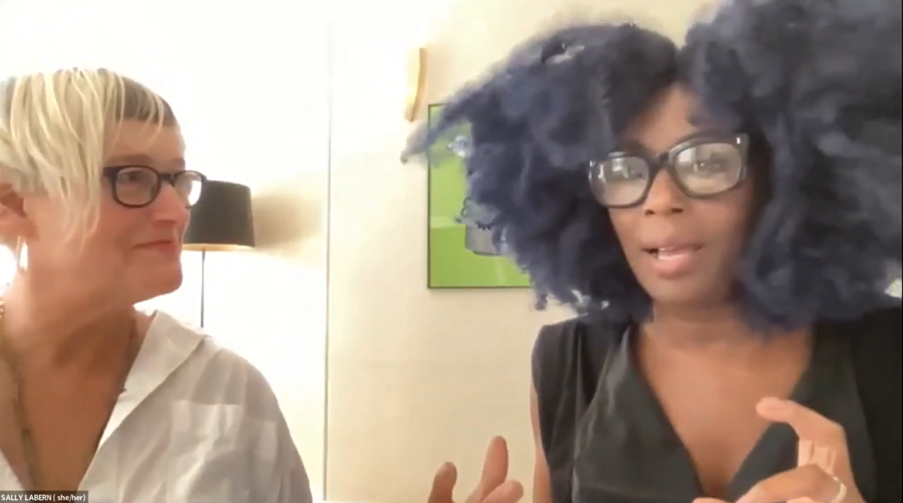
FIG. 7 Sally Labern and Elsa James presenting at the online forum ‘Emotional labour of social practice artists: moving towards sustainable collective care’ on 17th June 2022.
3. Questionnaire insights
The present authors have developed two overarching themes through analysis of the questionnaire responses. These elaborate, firstly, the different facets of emotional labour in social practice art and, secondly, the tension between the aspirational nature and the often constrained context of social practice art and its impact on the artists. These themes are expanded below with supporting excerpts from the questionnaire responses, with some minor editing to aid readability.
3.1 Identifying different facets of emotional labour in social practice art: concealing and revealing or distancing and connecting
The social practice artist participants described emotional labour – the management of feelings and expressions during interactions with others – as a significant and intrinsic aspect of their work.
[The work requires managing feelings and expressions during interactions with others] […] you need to not panic, be clear, be the one who is the rock, be the safe one, create the safe space. You cannot show upset in front of people, you can not show any of that (P1).33
Respondents recounted varied experiences of engaging in emotional labour, which they found at times positively rewarding and at others, deeply draining. The potential negative impact was most evident when they felt ill-equipped or under-supported, as explored further in the second theme. Some also expressed concern about the expectation to suppress, mask or ‘self-censor’ their true feelings (P3 and 11) in order to present an acceptable front for the sake of funders, risking a compromise to their sense of authenticity.
Two contrasting facets of emotional labour are elaborated in the following sub-themes. On the one hand, ‘enacting a brave face’ (section 3.1.1) involves efforts to consciously distanceoneself from emotions, masking or concealing them to maintain professionalism and contain others’ emotions, thereby providing participants with a safe space. On the other hand, ‘opening up brave spaces’ (section 3.1.2) captures the participants’ efforts to revealsomething of their own vulnerabilities in order to connectmore deeply and foster a more expressive, creative space.
3.1.1 Enacting a brave face
Evoking the construct of ‘surface acting’ from emotional labour literature, a recurrent theme emerged around enacting a ‘brave face’ – the effort to promote a sense of safety for the individuals and communities engaged in social practice art, while offering emotional containment in the context of the distress, trauma and pervasive social inequities. This form of labour was characterised as necessary but potentially burdensome:
I would say that while I’m working I aim for my focus to be 100% on participant experience, so my feelings and emotions need to take a back seat. I need to put on a brave face if I’m dealing with difficulties in my personal life (although I would say that this is true of anyone who works with children and young people, not just artists) (P9).
Adopting a brave face was articulated as imperative and essential for promoting safety and maintaining a professional stance. This requirement is not unique to social practice artists and may arise in any role that demands ‘professionalism’, particularly when working with children and other vulnerable populations (P21). However, a contrast was drawn with ‘conventional’ artists, who were viewed as free to ‘create a more honest persona’ (P4). The notion of honesty reappears throughout many of the questionnaire responses, identified as a fundamental component in developing trust in the interrelationship of artists and participants, leading to collaboration and co-production rather than simply facilitation.
3.1.2 Opening up brave spaces
The concept of the ‘brave face’was contrasted by a respondent who described a shift from creating ‘safe spaces’ to co-creating ‘brave spaces’, in which more reciprocal sharing of both vulnerability and support occurs between artists and the communities they engage with:
I used to feel very constrained in work settings, worried about showing too many emotions, wanting to appear competent and calm so others felt the space was safe. I feel differently about this now. I think collaboratively growing a space where everyone involved can take turns to be vulnerable / supportive is vital. Creative intimacies need vulnerability to flourish; it needs to be considered and to some extent planned so everyone can participate in giving and receiving care. I now value and hopefully am part of creating care-filled, brave spaces as opposed to safe spaces (P8).
The endeavour to connect deeply in this way resonates with the emotional labour literature on ‘deep acting’, insofar as it involves empathically engaging with others’ emotions and creating shared experiences. However, whereas deep acting typically refers to modifying one’s feelings to meet the expectations of the role or situation, the language used by these participants suggested a more authentic expression of their own emotions, vulnerabilities and experiences (P7), aimed at fostering dialogue and opening up ‘new spaces’ (P15). Creating brave spaces goes beyond simply providing a place where people can share and interact boldly; they cannot be made by one person alone, but must be co-constructed by all participants, who have come to know and trust one another FIG. 8. Bravery is required because these spaces are often inherently unsafe and may even necessitate exclusion to ensure openness. By attending to each individual, trust is built collectively, forming a porous space in which to co-create. The act of making art together generates transformative togetherness, yet, due to social, political and funding structures, the onus continues to be on the artist to fabricate these spaces single-handedly.
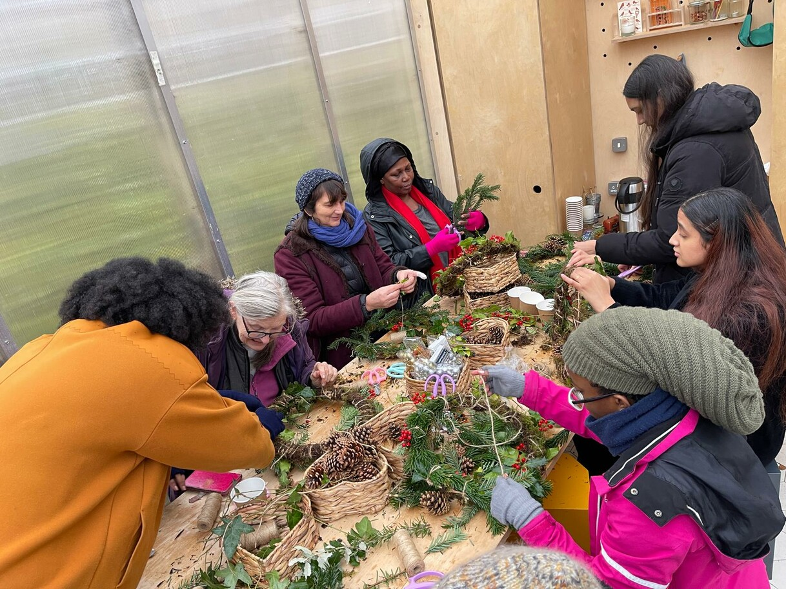
FIG. 8 Slowing the Flow, by Sally Labern with Teanne Andrews, co-curated with women on an East London social housing estate. 2024–27. Clay, herbs, cut-and-loop reuse 16mm film; sound works from water poured vessel to vessel, ground to ground, neighbour to neighbour, place to place. (A climate response with research led by personal familial connections to extraction and the Global South; courtesy the artists).
Taken together, these distinct facets of emotional labour described by the participants can be seen as complementary. Part of the skill of an experienced practitioner appears to lie in having the flexibility to pivot between ‘enacting a brave face’ and ‘opening up brave spaces’, sharing aspects of themselves to allow creativity and connection to flourish. Although these ideas overlap to an extent with the broader literature on emotional labour, respondents’ accounts suggest that they extend beyond the traditional constructs of surface and deep acting, possibly reflecting a role that moves from service provision to co-creation. It is the positionality of ‘caring with’, of support and burden and of entering into relationships of responsibility and reciprocity.
3.2 Tension between the aspirational nature and the constrained context of the practice
A tension or mismatch was articulated between the nature of social practice art – described as ‘long, slow, deep, shared’ – and the context in which these artists are often required to practise, characterised as ‘short-term, rushed, spread thin, under-supported’.
3.2.1 The nature of social practice art: long, slow, deep, shared
Respondents offered rich accounts of how they perceive the nature of social practice art at its best, and how they strive to practise in ways that do this potential justice. The language and metaphors they used evoked a sense of expansiveness and depth of connection and collaboration, which demanded substantial time, patience, adaptability and reciprocity FIG. 9. Indicative phrases include: ‘I build deep connections with people in the celebration and support of site-specific responses, DIY architectures and community actions’ (P6) and ‘experiencing a slow dissolving of hierarchies over long engagements with specific groups / communities’ (P8).
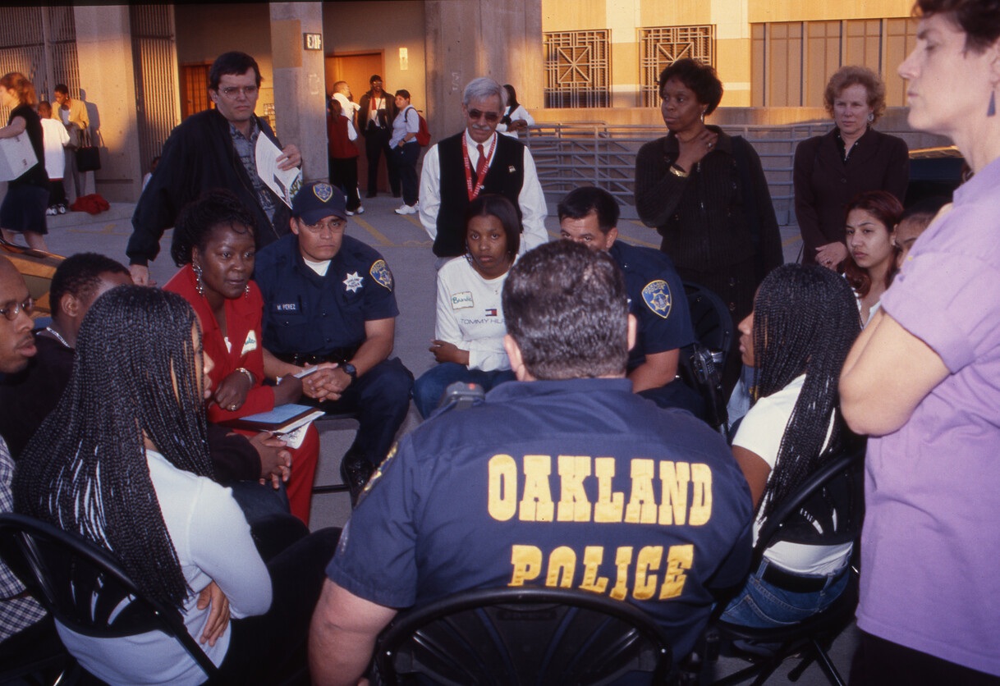
FIG. 9 Code 33: Emergency, Clear the Air!, by Suzanne Lacy, Julio César Morales and Unique Holland. Performed at City Centre West Garage, Oakland, 7th October 1999. (Courtesy the artist; photograph Kelli Yon).
Where these qualities of practice were achievable, respondents offered moving accounts of the enrichment and reciprocal rewards that arose from a shared vision and collaboration within their work:
Having fun together, we laugh a lot while creating theatre. Making theatre with participants can feel like quite a high risk, high reward situation. […] I think the process of making and then sharing work makes everyone involved in its creation feel connected in a way to one another. It’s a very collaborative experience (P10).
3.2.2 The context of practice: short-term, rushed, spread thin, under-supported
The potential depth of engagement described by some respondents stands in stark contrast to the scarcity of time and resources typically available to them. Indeed, this mismatch was cited as a major contributor to burnout. Pressure, fatigue and disillusionment appeared to stem from the need to bridge the gap, at personal cost, between high expectations on the one hand and insufficient resourcing or support on the other:‘having to apply for short term projects and commissions to patch together work that can only be achieved through long term engagement’ (P8); a ‘sense of rushing and urgency to the work creates burnout’ (P5).
At odds with the rewarding creativity and connectivity of their practice was the drain of competing demands on their time and the necessity to adopt other (often unacknowledged or even unpaid) roles as administrators, fundraisers, event promoters and evaluators (P7). Again, much of this feeling of being ‘spread thin’ could be attributed to the lack of adequate resources and infrastructure. Social practice artists exert many forms of labour and take on a variety of roles simultaneously to engage in their work: sourcing funding (P9), coordinating partners and volunteers (P7), marketing and publicity (P11), community and professional advocacy, nurturing relationships, facilitating workshops, conducting project evaluations (P16) and ensuring outputs and outcomes (P4).
This tension between the nature of the practice and the constraints of the context in which it takes place helps to explain artists’ narratives of shouldering untenable expectations. These weigh heavily on them and diminish their capacity to engage in a sustainable way with the depth of emotional labour warranted:
Sometimes I feel ‘spat out’ of centres after sessions because the room is needed for something else – with no chance to reconfigure myself for the rest of my day. I can carry stories inside of myself for days before I realise it’s been getting me down, or worrying me. (P16)
There’s also a lot of pressure to justify your work in order to keep it going […] The process of having to repeatedly apply for freelance opportunities/funding can be very draining, it takes a lot of mental and emotional labour and of course – there’s a high rejection rate which can have a big impact on mental health in the long run. (P9)
Despite the practitioners’ efforts to operate in a care-filled way with participants and their communities, they themselves often did not feel held by such care. When this giving is not matched with commensurate support, the resultant erosion of practitioner well-being can lead to burnout. Widespread concerns about the sustainability of their practice were evident across the responses. One respondent’s sense of abandonment read as a poignant call to collective action:
Who is looking after us? We are all burning out – so how can we stop this from happening before there are no decent artist educators left? (P16)
4. Emotional labour in social practice art
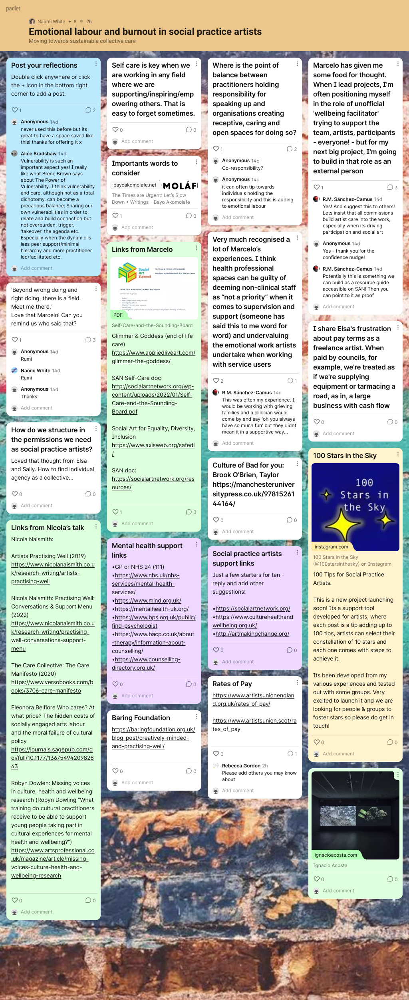
FIG. 10 Emotional labour and burnout in social practice artists Padlet page. (Courtesy the authors).
All respondents described engaging in what can broadly be understood as ‘emotional labour’, with one noting that this was an aspect of their practice ‘all the time’ (P1). While this is a small and non-representative sample, these findings provide compelling evidence that emotional labour is intrinsic to social practice art, yet not always formally acknowledged or supported. The conventional constructs of ‘surface acting’ and ‘deep acting’ do not fully capture the ways in which artists engage emotionally in their work. Some respondents described not merely ‘modifying’ their emotions to match the requirements of the role, but actively ‘revealing’ their vulnerabilities in order to open up ‘brave spaces’ where ‘creative intimacies [could] flourish’ (P8). This bears some resemblance to selective self-disclosure in therapeutic contexts, although the data described more reciprocal relationship-building than would conventionally characterise a clinical dynamic.34
It is important to note that social practice artists are not clinicians, yet they may work with the same individuals in similar contexts. Relationships between a clinician, therapist or professional and their patient or client are founded on the hierarchical structure of expert–novice, professional–patient or holder–held, reinforced by such terminology as ‘patient’, ‘client’ or ‘service-user’. These are necessarily one-way services. This authority held by the professional, rather than a horizontal sharing of experience, may partially explain some of the experiences conveyed by artists when working within clinical settings. During the subsequent online forum, which took place after the questionnaire responses had been collected, one participant posted on the live Padlet page FIG. 10:
I think health professional spaces can be guilty of deeming non-clinical staff as ‘not a priority’ when it comes to supervision and support (someone has said this to me word for word) and undervaluing the emotional work artists undertake when working with service users.
Another responded to the above post:
This was often my experience. I would be working with grieving families and a clinician would come by and say ‘oh you always have so much fun’ but they didn’t mean it in a supportive way.
These sorts of experiences chime with the barriers identified by Ravetz and Wright that artists face when seeking support and validation: diversity of practice making genre definitions difficult; unreasonable or unrealistic expectations from project partners; and a lack of support and infrastructures.35 These factors perpetuate social practice artists being undervalued economically, culturally and creatively.36 Indeed, Matarasso described social practice artists as ‘second-class citizens in the arts funding system’.37
4.1 Underfunding and emotional supports
Commissioning and funding structures largely reinforce an individualist mentality, with a single Principal Investigator (PI) or Lead Artist required for most applications. Acquisition and justification of funding tend to fall to the artist, which can take a significant emotional toll due to pressure to deliver high-impact outcomes on limited budgets in competitive environments. Given the variety of settings in which these artists work, as well as the diversity of participants and the interdisciplinarity of partners, funding for social practice art often comes from a wide range of art and non-art providers – ‘including arts and heritage, charitable trusts, health and social care and the private sector’ – each with myriad objectives, expectations and protocols.38 This can lead to social practice artists falling through the cracks of existing institutional structures, resulting in underfunding and insufficient emotional support – the two burdens that Belfiore cites as falling on the shoulders of the artist.39
4.2 Collective care
In her 2021 report Nicola Naismith stated that the landscape of affective support for creative practitioners is uneven, and in some cases, ‘a reactive approach to support resulted in it only being offered when requested, which placed the responsibility on the shoulders of the creative practitioner’.40 Her observation aligns with the findings of this project, with participants describing the emphasis resting on individual responsibility for self-care, typically at their own expense. The therapeutic supervisor and activist Vikki Reynolds has written a powerful critique of the ‘individualism and neutrality’ of burnout.41 She contests that burnout is very individually structured and argues that it says more about our society than it does about individual workers: ‘When self-care is prescribed as the antidote for burnout, it puts the burden of working in unjust contexts onto the backs of us as individual workers’.42 Lisa Chamberlain, who promotes collective care at an organisational level in the context of human rights work, suggests that self-care has become a political act, citing Norma Wong, who proclaims, ‘radical self-care is an interruption of violence against ourselves’.43 Self-care then can be understood as a resilience-building methodology.44
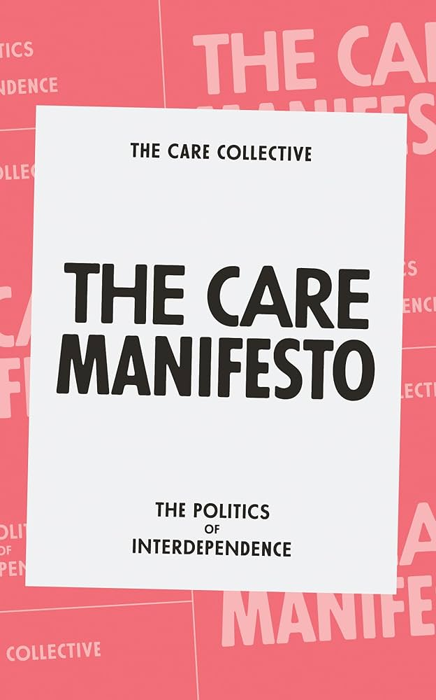
FIG. 11 Cover of The Care Manifesto: The Politics of Interdependence, by the Care Collective. 2020. (Courtesy Verso Books, London).
However, it is ineffective to respond only to symptoms (as in burnout) without attending to the root causes of social injustices. As Reynolds contended, ‘the issues are social and require political willingness, massive resources, direct action, and collective accountability’.45 With injustices permeating society on a structural level, the only approach for resisting burnout in community and therapeutic work, according to Reynolds, is ‘collective sustainability […] shouldered-up by justice-doing’.46 In The Ethics of Care, Virginia Held maintained that we must see care in terms of ‘caring relations’, with the relation being importantly one ‘of trust’.47 The Care Collective FIG. 11 has explained that putting care centre stage ‘means recognising and embracing our interdependencies’, a stance highly resonant with the questionnaire responses.48 To focus solely on self-care, or even affective supports, as a way to manage the emotional impact of such work is to overlook the need for the building of relational – or ‘pluralistic’, as Tronto puts it – care at a structural, organisational level.49 This includes ensuring we are not inadvertently propping up systems that perpetuate injustices through inequities in how artists’ labours are recognised, remunerated and supported.
Conclusion
This article has examined the emotional labour that social practice artists experience, identifying two different facets of that labour: enacting a brave face and opening up brave spaces. These findings foreground the tension between the aspirational nature of the practice – as long, slow, deep and shared – and the constrained context in which it typically operates. It is this tension, rather than the work itself, that these artists identified as the source of emotional toll and burnout. Further research and action, particularly at the funding and policy levels, are urgently needed to enable ‘the nurturing of all that is necessary for the welfare and flourishing of life’.50 Collective care only works with a shared, ongoing commitment to its ethos and practical implementation, necessitating changes to workload, working conditions and shifts in organisational culture.51 As Chamberlain implored, ‘working in a sustainable way which builds both individual and organisational resilience is a collective responsibility’.52 With mounting evidence that artists are increasingly exhausted by the disproportionate burden of responsibility they carry, there is a clear imperative for all to reconsider their role in this collective responsibility. How can we better support these practices and practitioners within our spheres of influence – from policy and funding processes through to implementation, including adequately resourced administrative, affective peer support? To do so is to value and play our own part in creating care-filled, brave spaces.
Acknowledgments
The seed project ‘Emotional labour of social practice artists: moving towards sustainable collective care’ was funded by University College London SHS Dean’s Strategic Award 2021–22 (£4,996), and delivered in partnership with the Social Art Network (SAN), a mutual aid network for social practice artists in the United Kingdom. Analysis of the questionnaire responses was informed by analysis conducted by Wordnerds’ AI/NLP software. The subsequent online forum hosted contributions from Nicola Naismith, visual artist and researcher and Visual Artist Fellow on the Clore Leadership Programme in 2017/18; Elsa James, a British African–Caribbean conceptual artist and activist; and R.M. Sánchez-Camus, the Director of Applied Live Art Studio (ALAS). Their reflective provocations prompted rich discussion and an environment of openness, facilitated by Sally Labern, Artist Director of the drawing shed. To Sally, we extend our gratitude for her generous collaboration and partnership in this project, and to all the questionnaire respondents and forum participants. We also thank Professor Mignon Nixon for her generous support.
Appendix
Appendix - please refer to Burlington Contemporary here
About the authors
Rebecca Gordon
is an independent researcher, writer and lecturer in contemporary art. She specialises in critical conservation and is passionate about community, collaboration, sustainability and the power of art to bring about social change.
Naomi White
is a clinical psychologist and qualitative and mixed methods researcher with an interest in burnout and practitioner well-being, exploring systemic and creative approaches to promoting health.
Footnotes
- A. Ravetz and L. Wright: From Network to Meshwork: Validation for Social Practice Art and Artists, Manchester 2020, p.15.footnote 1
- F. Matarasso: A Restless Art: How participation won, and why it matters, Lisbon and London 2019, p.19. There are many terms used interchangeably with social practice art. It is generally acknowledged to stem from ‘community art’ of the 1960s and 1970s, in which the creation of art was seen as a human right in which professional and non-professional are equals, and where the outcomes could not be known in advance. According to Miwon Kwon, the role of the artist was to be an ‘active social force’, see M. Kwon: One Place After Another: Site-Specific Art and Locational Identity, Cambridge MA and London 2004, p.100. This differs from ‘participatory art’, which emphasises the act of joining in with an organised activity. The lines have blurred over the years and many terms are now used synonymously. On ‘relational aesthetics’, see N. Bourriaud: Relational Aesthetics, transl. S. Pleasance and F. Woods, Dijon 2002; on ‘new genre public art’, see S. Lacy, ed.: Mapping the Terrain: New Genre Public Art, Seattle 1995; and on ‘dialogic practice/aesthetics’, see G. Kester: ‘Dialogical aesthetics’, in idem: Conversation Pieces: Community and Communication in Modern Art, Berkeley 2004, pp.82–123. Another term widely used is ‘socially engaged art’.footnote 2
- A.R. Hochschild: The Managed Heart: Commercialization of Human Feeling, Berkeley 1983.footnote 3
- C. Maslach and M.P. Leiter: ‘Understanding the burnout experience: recent research and its implications for psychiatry’, World Psychiatry 15 (June 2016), pp.103–11, doi.org/10.1002/wps.20311. On the risk of burnout, see M. Andela et al.: ‘Emotional labour and burnout: some methodological considerations and refinements’, Canadian Journal of Behavioural Science47 (2015), pp.321–32, doi.org/10.1037/cbs0000024.footnote 4
- D. Fancourt and S. Finn: What is the evidence on the role of the arts in improving health and well-being? A scoping review, Copenhagen 2019. See also ‘Overcoming burnout through Arts’, Art & Well-being, available at art-wellbeing.eu/research-burnout, accessed 14th October 2025. For more information on the growing social prescribing structure in the United Kingdom, see ‘What is Social Prescribing’, National Academy for Social Prescribing, available at socialprescribingacademy.org.uk/what-is-social-prescribing, accessed 14th October 2025; and ‘Social prescribing’, Arts Council England, available at www.artscouncil.org.uk/developing-creativity-and-culture/health-and-wellbeing/social-prescribing, accessed 14th October 2025.footnote 5
- E. Kris and O. Kurz: Legend, Myth and Magic in the Image of the Artist, London 1981.footnote 6
- M. Buskirk: The Contingent Object of Contemporary Art, Cambridge MA and London 2005, p.105.footnote 7
- J. Roberts: The Intangibilities of Form: Skill and Deskilling in Art after the Readymade, London 2007, p.2.footnote 8
- M. Hardt and A. Negri: Empire, Cambridge MA and London 2001, p.290, doi.org/10.4159/9780674038325.footnote 9
- J. Oksala: ‘Affective labor and feminist politics’, Signs:Journal of Women in Culture and Society 41 (2016), pp.281–303, at p.283, doi.org/10.1086/682920.footnote 10
- Ibid., p.282.footnote 11
- Ibid., p.284; see also Hardt and Negri, op cit.(note 9), p.96.footnote 12
- Oksala, op. cit.(note 10), p.284.footnote 13
- V.A. Zelizer: ‘How I became a relational economic sociologist and what does that mean?’, Politics & Society40 (2012), pp.145–74, at p.149, doi.org/10.1177/0032329212441591.footnote 14
- V.A. Zelizer: The Purchase of Intimacy, Princeton 2005.footnote 15
- Zelizer, op cit.(note 14), p.146.footnote 16
- N.K. Baym: ‘Connect with your audience! The relational labor of connection’, The Communication Review18 (2015), pp.14–22, doi.org/10.1080/10714421.2015.996401.footnote 17
- L. Hair: ‘Friends, not ATMs: parasocial relational work and the construction of intimacy by artists on Patreon’, Sociological Spectrum41 (2021), pp.192–212, at p.199, doi.org/10.1080/02732173.2021.1875090.footnote 18
- Ibid., p.199.footnote 19
- G. Musgrave: ‘Musicians, their relationships, and their wellbeing: Creative labour, relational work’, Poetics96 (2023), p.1–12, doi.org/10.1016/j.poetic.2023.101762.footnote 20
- Hochschild, op. cit.(note 3).footnote 21
- Ibid., p.7.footnote 22
- See S.C. Bolton: ‘Who cares? Offering emotion work as a “gift” in the nursing labour process’, Journal of Advanced Nursing32 (2000), pp.580–86, doi.org/10.1046/j.1365-2648.2000.01516.x; and B.E. Ashforth and R.H. Humphrey: ‘Emotional labor in service roles: the influence of identity’, The Academy of Management Review18 (1993), pp.88–115, esp. p.89, doi.org/10.2307/258824.footnote 23
- E. Belfiore: ‘Who cares? At what price? The hidden costs of socially engaged arts labour and the moral failure of cultural policy’, European Journal of Cultural Studies25 (2022), pp.61–78, at p.62, doi.org/10.1177/1367549420982863.footnote 24
- Ibid., p.71.footnote 25
- See J.C. Tronto: Moral Boundaries: A Political Argument for an Ethic of Care, London 1993.footnote 26
- Belfiore, op. cit. (note 24), p.72.footnote 27
- Ibid., p.69.footnote 28
- See J.C. Tronto: Caring Democracy: Markets, Equality, and Justice, New York 2013. This article is not the place to look in-depth at the infrastructures of social practice art. Belfiore, op. cit.(note 24), has analysed the working conditions within socially engaged arts practice, highlighting systemic exploitation within funding practices. Sophie Hope has also explored the problems and impact of the prevailing short-term project-based approach to socially engaged arts commissioning, see S. Hope:‘From community arts to the socially engaged art’, in A. Jeffers and G. Moriarty, eds: Culture, Democracy and the Right to Make Art, London 2017. Nicola Naismith has researched affective support needs of artists working in health and well-being contexts, producing a ‘support menu’ as well as further research into the challenges of mainstreaming affective support, see N. Naismith: ‘Practising well: conversations and support menu’, Aberdeen 2021, doi.org/10.48526/rgu-wt-1538558 and idem: Artists practising well, Aberdeen 2019, doi.org/10.48526/rgu-wt-235847. What is relevant to this paper is understanding how our respondents felt about support available for the emotional labour involved in their practice.footnote 29
- V. Braun and V. Clarke: ‘Novel insights into patients’ life-worlds: the value of qualitative research’, The Lancet Psychiatry6 (2019), pp.720–21, doi.org/10.1016/S2215-0366(19)30296-2.footnote 30
- This data was anonymised and can be made available upon request. It was decided not to publish this information as it did not directly shape the content of this paper.footnote 31
- V. Braun and V. Clarke: ‘Reflecting on reflexive thematic analysis’,Qualitative Research in Sport, Exercise and Health 11 (2019), pp.589–97, doi.org/10.1080/2159676X.2019.1628806.footnote 32
- (P#) denotes participant number.footnote 33
- C.T. Audet and R.D. Everall: ‘Therapist self-disclosure and the therapeutic relationship: a phenomenological study from the client perspective’, British Journal of Guidance & Counselling 38 (2010), pp.327–42, doi.org/10.1080/03069885.2010.482450.footnote 34
- Ravetz and Wright, op. cit.(note 1), p.16.footnote 35
- Naismith 2019, op. cit.(note 29), p.7.footnote 36
- Matarasso, op. cit.(note 2), p.193.footnote 37
- Ravetz and Wright, op. cit.(note 1), p.26.footnote 38
- Belfiore, op. cit.(note 24), p.62. For artists within institutional structures, see E.L. Lingo and S.J. Tepper: ‘Looking back, looking forward: art-based careers and creative work’, Work and Occupations 40 (2013), pp.337–63, esp. p.344, doi.org/10.1177/0730888413505229.footnote 39
- Naismith 2021, op. cit.(note 29), p.5.footnote 40
- V. Reynolds: ‘Resisting burnout with justice-doing’, The International Journal of Narrative Therapy and Community Work 4 (2011), pp.27–45.footnote 41
- Ibid., p.29.footnote 42
- Norma Wong, quoted in L. Chamberlain: ‘From self-care to collective care: institutionalising self-care to build organisational resilience and advance sustainable human rights work’,Sur: International Journal on Human Rights 30 (2020), pp.215–25, at p.217.footnote 43
- Chamberlain, op. cit.(note 43), p.216.footnote 44
- Reynolds, op. cit.(note 41), p.29.footnote 45
- Ibid., p.28.footnote 46
- V. Held: The Ethics of Care,Oxford and New York 2006, p.36 and p.35, doi.org/10.1093/oxfordhb/9780195325911.003.0020, emphasis in original.footnote 47
- The Care Collective: The Care Manifesto: The Politics of Interdependence, London 2020, p.5.footnote 48
- Tronto, op. cit.(note 29), p.xiv.footnote 49
- The Care Collective, op. cit.(note 48), p.5.footnote 50
- Chamberlain, op. cit.(note 43), p.219.footnote 51
- Ibid., p.219.
ON SOURCE: BURLINGTON CONTEMPORARY